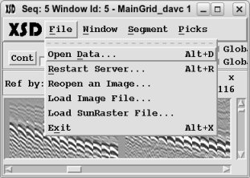
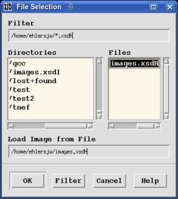

From the "File" menu you can create Display Windows.
 Open Data" - see "Load Data".Restart Server" - see "Start Server".Reopen an Image" - this makes it easy to open a dataset using
the same setup as a current Display Window. From the Parameter Window select
a Display Window which will then open up the "Server Parameters Window" for
creating a new Display Window.Load Image File" - A "File Selection Window" will
pop-up to allow you to find the file created by a previous save (*.xsdH). Select
the desired file and press the "OK" button.Load SunRaster File" - this allows for importing Sun Raster image
files to be used in XSD for picking data.